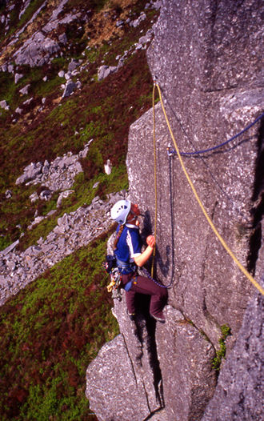
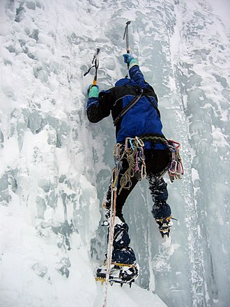
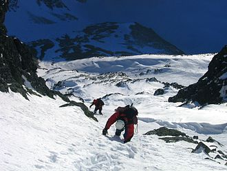

Альпіні́зм - вид спорту, який основною метою ставить сходження на природні та штучні
скелі
та стіни,
зокрема
на гірські вершини.
Як правило, технічна частина маршруту — від сотень метрів до декількох кілометрів, при цьому протягом
всьому
маршруту, як правило, не існує стаціонарних точок страховки. Сходження в залежності від складності та
протяжності маршруту може тривати від декількох годин, до декількох днів, тижнів і навіть місяців.
Виділяють альпійський і гімалайський стилі сходжень.
Альпійський стиль — це послідовний підйом на вершину разом зі всім спорядженням
Гімалайський стиль відрізняється попередньою підготовкою маршруту сходження, провішуванням
страхувальних
мотузок (перил), встановленням проміжних таборів, доставкою спорядження і кисню в ці табори, що
передбачає багаторазові підйоми і спуски з табору в табір. Гімалайський стиль — це своєрідна облога
гори, яка займає іноді 2-3 місяці, але саме така тактика дозволила
досягнути вершин Евереста та
інших
восьмитисячників.
Розвиток
В історії розвитку альпінізму можна умовно виділити кілька етапів:
- Сходження на нові вершини найпростішим шляхом.
- Підвищення складності маршрутів на пройдені раніше вершини в Альпах та інших гірських системах.
- Системні сходження на найвищі вершини світу
-
Проходження найскладніших маршрутів у різних гірських системах земної кулі.
Пам'ятні історичні дати
Виникнення альпінізму найчастіше пов'язують зі сходженням 8 серпня 1786 лікаря Мішеля-Габріеля Паккарда
і
гірського провідника Жака Бальма на найвищу точку Альп — Монблан. Пам'ятник першим сходжувачам на
гору
Монблан встановлено у світовому центрі альпінізму й гірських лиж — Шамоні.
-
1788 — Данило Гаусс, російський морський офіцер, з двома своїми товаришами піднявся на найвищу точку
Камчатки, вулкан Ключевська Сопка (4835 м)
-
1799—1804 Александр Гумбольдт досяг висоти 5800 метрів при сходженні на вулкан Чимборасо в Південній
Америці.
-
1889 — Перше сходження на Кіліманджаро, найвищу гору Африки.
-
1924 — Учасники британської експедиції досягли висоти 8530 м при спробі сходження на Еверест. Лідер
експедиції Джордж Меллорі та його напарник Ендрю Ірвін зникли безвісти під час штурму вершини. Попри
те, що тіло Меллорі знайшли на схилі гори у 1999 році, немає достеменних даних, що альпіністи
досягли вершини.
-
1953 — Успішна експедиція на найвищу вершину планети, гору Еверест. Першосходжувачі — Едмунд Гілларі
й Тенцинг Норгей. Цього ж року німецький альпініст Герман Буль вперше зійшов на Нанга-Парбат.
-
1964 — Альпіністи зійшли на Шишапангму — останню з 14 світових восьмитисячників.
-
1978 — Перше сходження на Еверест без кисневих приладів, яке здійснили Пітер Габелер і Райнгольд
Месснер.
-
1985 — Річард Басс став першим альпіністом, який зійшов на сім найвищих вершин семи частин світу.
-
1986 — Райнгольд Месснер став першим альпіністом, який побував на всіх 14 восьмитисячниках.
Технічно складні сходження в Альпах
Зародившись в Альпах, альпінізм саме тут вперше став розвиватися як вид спорту. Суто спортивні сходження
на вершини здійснювали в Альпах ще на початку XIX століття. Бурхливий розвиток спортивного альпінізму
розпочинається у XX столітті.
Пройдені маршрути по північній стіні Ейгера
До початку XX століття всіх альпійських вершин було досягнуто, багато з них під час так званої «Золотої
доби альпінізму», тож альпіністи почали шукати нові, складніші маршрути сходжень. Чим складніший був
маршрут, тим більш спортивним вважалося сходження. Так поступово з'явився «стінний» альпінізм, тобто
проходження маршрутів по стрімких гірських стінах.
Найсильнішими альпіністами в цій галузі були представники альпійських держав: італійці, німці,
австрійці, французи, а також англійці. У другій половині XX століття було пройдено такі стіни в Альпах,
які до цього довгий час вважалися нездоланними. Це свідчило про те, що рівень альпіністів виріс. Велике
значення для спортивної майстерності відіграв розвиток спорядження і техніки подолання скельних та
льодових ділянок. Поява легших та міцніших мотузок із синтетичних волокон, полегшених кішок, льодорубів,
шлямбурів і закладок, дюралеві драбинки, вдосконалені кухні, нові продукти, легкий, теплий одяг і взуття
— все це істотно вплинуло на якісний розвиток альпінізму.
Техніка альпінізму
При заняттях альпінізмом доводиться долати різноманітні природні перешкоди: річки, скелі, сніг,
льодовики, льодопади. Їх подолання, як правило, пов'язане з небезпекою. За багаторічну історію
альпінізму була вироблена спеціальна техніка подолання небезпечного гірського рельєфу.
-
Подолання скельних стін

-
Подолання крутого льоду

-
Подолання крутого снігового схилу

Альпінізм має важливе прикладне значення для різних сторін життя суспільства. У процесі свого розвитку
техніка альпінізму, вироблені прийоми, методи знайшли застосування в різних видах людської діяльності.